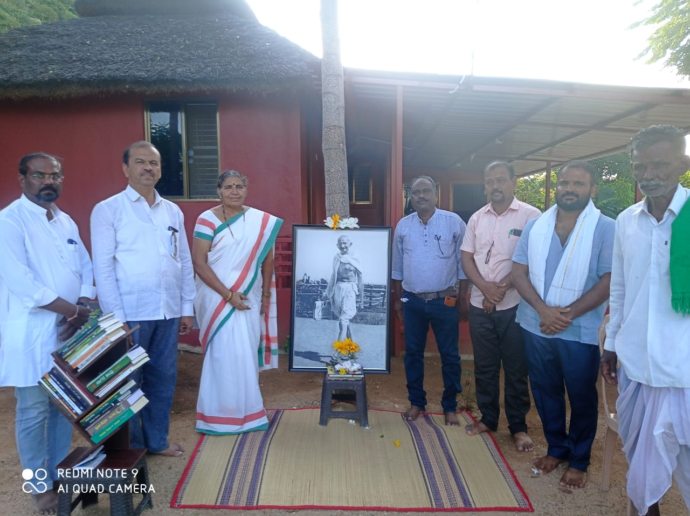

ಸಂಡೆ ಫಾರ್ ಸೋಶಿಯಲ್ ವರ್ಕ್ ನಿಂದ ಮಸ್ಕಿಯ ರುದ್ರಭೂಮಿಯ ಆತ್ಮಕ್ಕೆ ಶಾಂತಿ
ಬಹು ವರ್ಷಗಳಿಂದ ಸ್ವಚ್ಛತೆ ಕಾಣದ ಮಸ್ಕಿಯ ರುದ್ರಭೂಮಿಗಳನ್ನ ಸ್ವಚ್ಛ ಗೊಳಿಸಿ ಸಸಿ ನೆಡುವ ಕಾರ್ಯಕ್ರಮ ಮಸ್ಕಿಯ ಸೇವಾ ಸಂಸ್ಥೆ ಗಳಿಂದ ಜರುಗಿತು.
ಈ ವಾರದ ಸಂಡೇ ಫಾರ್ ಸೋಷಿಯಲ್ ವರ್ಕ್ ಅಭಿಯಾನಕ್ಕೆ ಮಸ್ಕಿಯ ಸೇವಾ ಸಂಸ್ಥೆಗಳಾದ ಲಯನ್ಸ್ ಕ್ಲಬ್ ಆಫ್ ಮಸ್ಕಿ. ಸ್ವಾಮಿ ವಿವೇಕಾನಂದ ಹಾಗೂ ರಾಮಕೃಷ್ಣ ಆಶ್ರಮ ಮಸ್ಕಿ, ಅಭಿನಂದನ್ ಶಿಕ್ಷಣ ಹಾಗೂ ಗ್ರಾಮೀಣ ಅಭಿವೃದ್ಧಿ ಸಂಸ್ಥೆ ಮಸ್ಕಿ ಶಿವರಾಜ್ ತಾಂಡೂರು ಹಾಗೂ ಸಂಗಡಿಗರು ಹಾಗೂ ಮಸ್ಕಿ
ದೇವಾಂಗ ಸಮಾಜ, ಬಣಜಿಗ ಸಮಾಜ, ರಜಪೂತ ಸಮಾಜ,ಡಾ ಶಿವಶರಣಪ್ಪ ಇತ್ಲಿ ಫೌಂಡೇಶನ್ ಮಸ್ಕಿ ಇವರ ಜಂಟಿ ಸಹಯೋಗದಲ್ಲಿ ಮಸ್ಕಿಯ ರುದ್ರಭೂಮಿಗಳ ಸ್ವಚ್ಛತೆ ಮತ್ತು ಸಸಿ ನೆಡುವ ಕಾರ್ಯಕ್ರಮ ಮಾಡಲಾಯಿತು.
ಶ್ರೀ ಶಿವರಾಜ್ ತಾಂಡೂರು ಅವರು ಜೆಸಿಬಿ ಹಾಗೂ ಸಿಬ್ಬಂದಿಯನ್ನು ಒದಗಿಸಿದರು. ಪುರಸಭೆ ಮಸ್ಕಿಯವರು ಜೆಸಿಬಿ ಹಾಗೂ ಸಿಬ್ಬಂದಿಯನ್ನ ಒದಗಿಸಿದರು.
ಲಯನ್ಸ್ ಕ್ಲಬ್ ಆಫ್ ಮಸ್ಕಿ ಯವರು ಸಸಿ ಹಾಗೂ ಡೀಸಲ್ ಒದಗಿಸಿದರು.
ಡಾ ಶ್ರೀ ಶಿವಶರಣಪ್ಪ ಇತ್ಲಿ ಫೌಂಡೇಶನ್ ವತಿಯಿಂದ ವಾಹನ ಸೌಲಭ್ಯ ಒದಗಿಸಿದರು.
ಶ್ರೀ ರಾಮಕೃಷ್ಣ ಆಶ್ರಮ ಇವರು ಸಸಿಗಳನ್ನು ಒದಗಿಸಿದರು. ಕಸ್ತೂರಿ ಇತ್ಲಿ ಇವರು ತಂಪು ಪಾನೀಯ ಮಾಡಿ ಕೊಂಡು ಬಂದಿದ್ದರು.
ಲಯನ್ಸ್ ಕ್ಲಬ್ ನ ಅಧ್ಯಕ್ಷರಾದ ಶ್ರೀ ಸಿದ್ದಲಿಂಗಯ್ಯ ಸೊಪ್ಪಿಮಠ,ಲಯನ್ಸ್ ಸದಸ್ಯರಾದ ಬಸಲಿಂಗಪ್ಪ ಲಿಂಗಶೆಟ್ಟಿ, ರವಿ ದೇಶ್ಮುಖ್, ಶಿವರಾಜ್ ಇತ್ಲಿ, ಮಹಾಂತೇಶ್ ಮಸ್ಕಿ, ಮಂಜುನಾಥ ಬಿಜ್ಜಳ್, ಕಸ್ತೂರಿ ಇತ್ಲಿ, ಮಲ್ಲಿಕಾರ್ಜುನ ಶ್ರೇಷ್ಠಿ, ರಾಮಕೃಷ್ಣ ಆಶ್ರಮದ ಸಿದ್ಧು ಜಿ, ಶರಣಪ್ಪ
ತಾಂಡೂರು ಸಂಗಡಿಗರಾದ ಮನೋಹರ್ ಪತ್ತಾರ,ರವಿಕುಮಾರ್, ಮಲ್ಲಿಕಾರ್ಜುನ ಕುರಿ, ಬಿಎಸ್ಎಫ್ ನ ಮನೋಜ್,ದೇವಾಂಗ ಸಮಾಜದ ವೆಂಕಟೇಶ್ ಬಿದರಿ, ವಿಶ್ವನಾಥ್ ಕಂಪ್ಲಿ, ರಜಪೂತ ಸಮಾಜದ ಸುಭಾಷ್ ಸಿಂಗ್,
ಅಭಿನಂದನ್ ಸಂಸ್ಥೆಯ ಗೌರವಾಧ್ಯಕ್ಷರಾದ ಶಿವಪ್ರಸಾದ್ ಕ್ಯಾತ್ನಟ್ಟಿ, ಸಂಸ್ಥಾಪಕರಾದ ರಾಮಣ್ಣ ಹಂಪರಗುಂದಿ,ಸದಸ್ಯರಾದ ಕಿಶೋರ್, ಕುಮಾರ ಶ್ರೀಶೈಲ ಇನ್ನಿತರರು ಉಪಸ್ಥಿತರಿದ್ದರು.
ಮನ ತಾಕಿದ್ದು: ಶ್ರೀ ಶಿವರಾಜ್ ತಾಂಡೂರ್ ತಮ್ಮ ತಾಯಿಯವರ ನೆನಪಿನಲ್ಲಿ ತಮ್ಮದೇ ಸ್ವಂತ ತಂಡ ಕಟ್ಟಿಕೊಂಡು ಜೆ ಸಿ ಬಿ ಬಳಿಸಿ ಸ್ವಚ್ಛತೆ ಮಾಡಿಸಿದ್ದು ಮತ್ತು ಇನ್ನು ಹಲವು ರುದ್ರ ಭೂಮಿ ಅಭಿವೃದ್ಧಿ ಯೋಜನಗೆಳನ್ನ ಅವರು ವಿವರಿಸಿದ್ದು. ಶ್ರೀ ಮತಿ ಕಸ್ತೂರಿ ಎಸ್ ಇತ್ಲಿ ಇವರು ಎಲ್ಲ ಸ್ವಯಂ
ಸೇವಕ ರಿಗೆ ದ್ರಾಕ್ಷಿ ರಸಾಯನ ಮಾಡಿಕೊಂಡು ಬಂದಿದ್ದು.
ಮಸ್ಕಿಯ ಅಕ್ಷರ ಸಾಹಿತ್ಯ ವೇದಿಕೆಯಿಂದ ಗಾಂಧೀ ಸ್ಮ್ರಿತಿ ಕಾರ್ಯಕ್ರಮ
ಮಸ್ಕಿಯ ಸ್ವಾಮಿ ವಿವೇಕಾನಂದ ಮತ್ತು ಗಾಂಧೀ ಕುರಿತ ಕವಿತಾ ವಾಚನ, ಆತ್ಮ ಚರಿತ್ರೆಯ ತುಣುಕುಗಳು, ನೆನಪಿನ ಮಾತುಗಳನ್ನ ಸ್ಮರಿಸುವ ಶುಭ ಕಾರ್ಯ ಮಸ್ಕಿಯಲ್ಲಿ ಜರುಗಿತು.

ಸಂಜೆಯ ಸೂರ್ಯ ಇಳಿಯುವ ವೇಳೆಗೆ ಪಟ್ಟಣದ ದಿವಂಗತ ಶ್ರೀ ಶಂಭುಲಿಂಗಪ್ಪ ಕ್ಯಾತ್ನಟ್ಟಿ ಇವರ ತೋಟದ ಮನೆಯಲ್ಲಿ ಶುರುವಾದ ಗಾಂಧೀ ಸ್ಮ್ರಿತಿ ಕಾರ್ಯಕ್ರಮ ಮಸ್ಕಿಯ ಸಾಹಿತ್ಯ ಪ್ರಿಯರನ್ನ ಒಂದೆಡೆ ಸೇರಿಸಿತ್ತು. ಮೊದಲಿಗೆ ಕುಮಾರಿ ಪಲ್ಲವಿ ಕೋಡಗುಂಟಿ ಮತ್ತು ಕುಮಾರಿ ಸನ್ನಿಧಿ ಎಸ್
ಕ್ಯಾತ್ನಟ್ಟಿ ಪ್ರಾರ್ಥನೆ ಮಾಡಿದರು. ಅಕ್ಷರ ಸಾಹಿತ್ಯ ವೇದಿಕೆಯ ಶ್ರೀ ಗುಂಡೂರಾವ್ ದೇಸಾಯಿ ಸ್ವಾಗತ ಮತ್ತು ಪ್ರಾಸ್ತಾವಿಕ ಮಾಡಿದರು. ನಂತರ ಗಾಂಧೀ ಕುರಿತ ಕವಿತೆಗಳನ್ನ ಶ್ರೀ ಬೀರು ದೇವರಮನಿ, ಶ್ರೀ ಸೂಗೂರೇಶ ಕನ್ನಾಳ್, ಶ್ರೀ ಅಮರೇಶ್ ಪಾಟೀಲ್, ಶ್ರೀ ದೇವರಾಜ್ ಘಂಟಿ, ಶ್ರೀ ಸುರೇಶ
ಮಲ್ಲಿಗೆ ಮನೆ, ಶ್ರೀ ಪಂಪಯ್ಯ ಸ್ವಾಮಿ ಸಾಲಿಮಠ ವಾಚಿಸಿದರು. ಗಾಂಧೀ ಆತ್ಮ ಚರಿತ್ರೆಯ ತುಣುಕುಗಳನ್ನ ಡಾ ಶ್ರೀ ಶಶಿಕಾಂತ್ ಕಾಡಲೂರ್, ಶ್ರೀ ಮಹಾಂತೇಶ್ ಮಸ್ಕಿ , ಶ್ರೀ ಆದಪ್ಪ ಹೆಂಬಾ, ಶ್ರೀ ವೀರೇಶ್ ಸೌದ್ರಿ ಬೋದಿಸಿದರು. ಕಾರ್ಯಕ್ರಮದ ಪ್ರಮುಖ ಭಾಗವಾದ ಗಾಂಧೀ ಕುರಿತ ನೆನಪಿನ
ಮಾತುಗಳನ್ನ ಸಿಂಧನೂರಿನ ಉಪನ್ಯಾಸಕರು ಮತ್ತು ಚಿಂತಕರಾದ ಶ್ರೀಮತಿ ಮಧುಮತಿ ದೇಶಪಾಂಡೆ ಮತ್ತು ಸಮುದಾಯ ರಾಜ್ಯ ಕಾರ್ಯದರ್ಶಿಗಳಾದ ಶ್ರೀ ಎಸ್ ದೇವೇಂದ್ರಗೌಡ ಹೇಳಿದರು. ವಂದನಾರ್ಪಣೆಯನ್ನ ಶ್ರೀ ಶಿವಪ್ರಸಾದ್ ಕ್ಯಾತ್ನಟ್ಟಿ ಮಾಡಿದರು. ಕಾರ್ಯಕ್ರಮದ ನಿರ್ವಹಣೆಯನ್ನ ಶ್ರೀ ಪರುಶುರಾಮ
ಕೋಡಗುಂಟಿ ನೆಡೆಸಿ ಕೊಟ್ಟರು. ಕಾರ್ಯಕ್ರಮಕ್ಕೆ ಮಸ್ಕಿಯ ಸಾಹಿತ್ಯ ಆಸಕ್ತರು ಮತ್ತು ಗಾಂಧೀ ಪ್ರಿಯರು ಹಾಜರಾಗಿದ್ದರು.
ಮನ ತಾಕಿದ್ದು: ಶ್ರೀಮತಿ ಮಧುಮತಿ ದೇಶಪಾಂಡೆಯವರು ಗಾಂಧೀ ಹೇಗೆ ಸಾರ್ವತ್ರಿಕ ಮತ್ತು ಅವರ ಬಗ್ಗೆ ಪ್ರಶಂಶಿಸಲು ಬೇಕಾದ ಪ್ರಬುದ್ಧತೆ ಬಗ್ಗೆ ಸರಳ ರೀತಿಯಲ್ಲಿ ವಿವರಿಸಿದ್ದು. ಕುಮಾರಿ ಪಲ್ಲವಿ ಕೋಡಗುಂಟಿ ಯವರ ಅರ್ಥ ಪೂರ್ಣ ಪ್ರಾರ್ಥನೆ. ಬಿಳಿ ಟೋಪಿ ಧರಿಸಿದ್ದ ಎಲ್ಲ ಸಭಿಕರು.
ಮಸ್ಕಿಯ ಲಯನ್ಸ್ ಕ್ಲಬ್ ಮತ್ತು ರಾಮಕೃಷ್ಣ ಆಶ್ರಮ ದಿಂದ ಸ್ವಚ್ಛತಾ ಅಭಿಯಾನ
ಮಸ್ಕಿಯ ಸ್ವಾಮಿ ವಿವೇಕಾನಂದ ಮತ್ತು ಸ್ವಚ್ಛ ಪ್ರಿಯ ಗಾಂಧೀಗೆ ಸ್ವಚ್ಛ ಮಸ್ಕಿ ಅಭಿಯಾನ ಮಾಡಿದ ಲಯನ್ಸ್ ಕ್ಲಬ್ ಮಸ್ಕಿ , ಸ್ವಾಮಿ ವಿವೇಕಾನಂದ ಮತ್ತು ರಾಮಕೃಷ್ಣ ಆಶ್ರಮ ಮಸ್ಕಿ .
ಗಾಂಧೀ ಜಯಂತಿಯ ಅಂಗವಾಗಿ ಗಾಂಧೀಗೆ ಪ್ರಿಯವಾದ ಸ್ವಚ್ಛತಾ ಅಭಿಯಾನವನ್ನ ಕನಕ ವೃತ್ತದಿಂದ ಶುರು ಮಾಡಿ ಲಯನ್ಸ್ ಶಾಲೆ ಮಸ್ಕಿ ವರೆಗೂ ಪ್ಲಾಸ್ಟಿಕ್ ಪೇಪರ್, ಗುಟ್ಕಾ ಚೀಟು ಮುಂತಾದ ಮಾನವ ಶೃಷ್ಟಿಸಿದ ಕಸವನ್ನ ಸಂಗ್ರಹಿಸಿ ಪುರಸಭೆಯ ಕಸ ಸಂಗ್ರಹಣಾ ವಾಹನಕ್ಕೆ ರವಾನಿಸಲಾಯಿತು. ಮುಂದೆ ಲಯನ್ಸ್
ಶಾಲೆಯಲ್ಲಿ ನೆಡೆದ ಗಾಂಧೀ ಕುರಿತ ಮಕ್ಕಳ ಬೌದ್ಧಿಕ ಕಾರ್ಯಕ್ರಮದಲ್ಲಿ ಲಯನ್ಸ್ ಸದಸ್ಯರು ಮತ್ತು ರಾಮಕೃಷ್ಣ ಆಶ್ರಮದ ಸದಸ್ಯರು ಮತ್ತು ಲಯನ್ಸ್ ಶಾಲೆಯ ಸಿಬ್ಬಂದಿ ಹಾಜರಿದ್ದು ನೆರವೇರಿಸಕೊಟ್ಟರು. ತದ ನಂತರ ಶಾಲಾ ಮಕ್ಕಳು ಮತ್ತು ಸದಸ್ಯರು ಊರ ಓಣಿಗಳ್ಳಲ್ಲಿ ಸ್ವಚ್ಛತಾ ಅಭಿಯಾನದ
ಘೋಷಣೆಗಳನ್ನ ಕೂಗಿ ಸಾರಿದರು. ರಾಮಕೃಷ್ಣ ಆಶ್ರಮದ ಸಂಚಾಲಕರಾದ ಶ್ರೀ ಸಿದ್ದುಜೀ , ಸದಸ್ಯರಾದ ಶ್ರೀ ಅಮರೇಶ್ ಬ್ಯಾಳಿ , ಶ್ರೀ ಮಹಾಂತೇಶ್ ಬ್ಯಾಳಿ, ಶ್ರೀ ರಮೇಶ್ ಗುಡಿಸಲಿ , ಶ್ರೀ ಅಮರೇಶ್ ಮಸ್ಕಿ,, ಶ್ರೀಮತಿ ಆಶಾ ಎಸ್ ಕ್ಯಾತ್ನಟ್ಟಿ' ಮತ್ತು ಲಯನ್ಸ್ ಅಧ್ಯಕ್ಷರಾದ ಶ್ರೀ ಸಿದ್ದಲಿಂಗಯ್ಯ
ಸೊಪ್ಪಿಮಠ , ಸದಸ್ಯರಾದ ಡಾ ಶ್ರೀ ಮಲ್ಲಿಕಾರ್ಜುನ್ ಇತ್ಲಿ , ಶ್ರೀ ಬಸವಲಿಂಗಪ್ಪ ಲಿಂಗಶೆಟ್ಟಿ , ಶ್ರೀ ಶಿವರಾಜ್ ಇತ್ಲಿ , ಡಾ ಶ್ರೀ ಮಲ್ಲಿಕಾರ್ಜುನ್ ಶ್ರೇಷ್ಠಿ , ಶ್ರೀ ಲಕ್ಷ್ಮಿ ನಾರಾಯಣ ಶ್ರೇಷ್ಠಿ , ಶ್ರೀ ಶಿವಪ್ರಸಾದ್ ಕ್ಯಾತ್ನಟ್ಟಿ ಭಾಗವಹಿಸಿದ್ದರು.
ಮನ ತಾಕಿದ್ದು : ಲಯನ್ಸ್ ಶಾಲಾ ಮಕ್ಕಳ ಉತ್ಸಾಹ ಪೂರಿತ ಘೋಷಣೆಗಳು. ಕನಕ ವೃತ್ತದ ಪಾನ್ ಶಾಪ್ ಒಂದರ ಮಾಲೀಕ ತಾನು ದಿನ ನಿತ್ಯ ಮಾಡುವ ಸ್ವಚ್ಛತೆ ಬಗ್ಗೆ ವಿವರಿಸಿದ್ದು.
ಅಭಿನಂದನ್ ಸಂಸ್ಥೆಯ "ತಟ್ ಅಂತ ಹೇಳಿ" ರಸ ಪ್ರಶ್ನೆ ಕಾರ್ಯಕ್ರಮದ ವಿಜಯಿಗಳಿಗೆ ಪುರಸ್ಕಾರ
ತನ್ನ ೫೦೦ನೇ ಕಂತು ಮುಗಿಸಿದ್ದ ಅಭಿನಂದನ್ ಸಂಸ್ಥೆಯ ಡಿಜಿಟಲ್ ರಸ ಪ್ರಶ್ನೆ ಕಾರ್ಯಕ್ರಮದ ವಿಜಯಿಗಳಿಗೆ ದೊರೆಯಿತು ಪದಕ ಮತ್ತು ಪ್ರಮಾಣ ಪಾತ್ರ.
ತಮ್ಮ ದೈನಂದಿನ ರಸ ಪ್ರಶ್ನೆ ಸ್ಪರ್ಧೆಯಿಂದ ಮಸ್ಕಿಯ ಸುತ್ತಮುತ್ತಲಿನ ನಾಗರಿಕರಿಗೆ ಜ್ಞಾನಾರ್ಜನೆ ಮಾಡುತ್ತಿರುವ ಅಭಿನಂದನ್ ಸಂಸ್ಥೆಯ ಡಿಜಿಟಲ್ ಕಂಪ್ಯೂಟರ್ ಎಜುಕೇಶನ್ ಸೆಂಟರ್ ನ ತಟ್ ಅಂತ ಹೇಳಿ ರಸ ಪ್ರಶ್ನೆ ಕಾರ್ಯಕ್ರಮದ ವಿಜಯಿಗಳಿಗೆ ಪ್ರೋತ್ಸಾಹಕ ಪದಕ ಮತ್ತು ಪ್ರಮಾಣ ಪತ್ರಗಳನ್ನ
ಕೊಡಲಾಯಿತು. ಸಂಸ್ಥೆಯ ಸಂಸ್ಥಾಪಕರಾದ ಶ್ರೀ ರಾಮಣ್ಣ ಹಂಪರಗುಂದಿ ಮಾತನಾಡಿ ಸಂಸ್ಥೆ ಬೆಳೆದು ಬಂದ ದಾರಿ ಹಾಗು ಸ್ಪರ್ಧೆಯ ಕಿರು ಪರಿಚಯ ಮಾಡಿ ಕೊಟ್ಟು ಹೇಗೆ ಶ್ರೀ ಮಲ್ಲಿಕಾರ್ಜುನ ಬಡಿಗೇರ್ ಮತ್ತು ತಂಡದವರು ಹಗಲಿರುಳು ಪರಿಶರ್ಮಿಸಿ ಈ ಒಂದು ಜ್ಞಾನಾರ್ಜನೆ ಕಾರ್ಯವನ್ನ ಉಚಿತವಾಗಿ
ಮಾಡುತ್ತಿದ್ದಾರೆ ಅನ್ನುವುದನ್ನ ಬಿಡಿಸಿ ಹೇಳಿದರು. ಕಾರ್ಯಕ್ರಮದ ವಿಜಯಿಗಳು ತಮ್ಮ ಪರಿಚಯ ಮಾಡಿಕೊಂಡು ಹೇಗೆ ಈ ರಸ ಪ್ರಶ್ನೆ ಕಾರ್ಯಕ್ರಮ ತಮ್ಮ ಬಾಳಿನ ದಿಕ್ಕು ಬದಲಿಸದೆ ಮತ್ತು ತಮಗೆ ನಿತ್ಯ ಮೆದುಳಿನ ಮಂಪರಿಗೆ ಔಷಧವಾಗಿದೆ ಎಂದು ಕೃತಜ್ಞತೆ ವ್ಯಕ್ತ ಪಡಿಸಿದರು. ಮುಖ್ಯ ಅತಿಥಿಗಳಾದ
ಲಯನ್ ಶ್ರೀ ಬಸವಲಿಂಗಪ್ಪ ಲಿಂಗಶೆಟ್ಟಿ ಇವರಿಗೆ ಸನ್ಮಾನಿಸಲಾಯಿತು. ಕಾರ್ಯಕ್ರಮದಲ್ಲಿ ಸಂಸ್ಥೆಯ ಸದಸ್ಯರಾದ ಶ್ರೀ ಮತಿ ಶ್ರುತಿ ಹಂಪರಗುಂದಿ , ಶ್ರೀ ಅಮಿತ್ ಕುಮಾರ್ ಪುಟ್ಟಿ , ಶ್ರೀ ರೇಣುಕಾ ಹಂಪರಗುಂದಿ, ಶ್ರೀ ಕಿಶೋರ್ , ಶ್ರೀ ಬಸವರಾಜ್ , ಶ್ರೀಮತಿ ಆಶಾ ಎಸ್ ಕ್ಯಾತ್ನಟ್ಟಿ , ಶ್ರೀ
ಶಿವಪ್ರಸಾದ್ ಎಸ್ ಕ್ಯಾತ್ನಟ್ಟಿ ಉಪಸ್ಥಿತರಿದ್ದು ಯೆಶಸ್ವಿಯಾಗಿ ನೆಡೆಸಿಕೊಟ್ಟರು.
ಮನ ತಾಕಿದ್ದು: ವಿವಿಧ ಊರುಗಳಿಂದ ಬಂದಿದ್ದ ಸ್ಪರ್ಧಾ ವಿಜೇತರು ಕಾರ್ಯಕ್ರಮಕ್ಕೆ ಮೊದಲಿಗರಾಗಿ ಬಂದು ಕೊನೆಯವರೆಗೂ ಇದ್ದು ಹೋಗಿದ್ದು. ಸಂಸ್ಥೆಯ ಬೆಳವಣಿಗೆ ಬಗ್ಗೆ ಶ್ರೀ ರಾಮಣ್ಣ ಹಂಪರಗುಂದಿ, ಶ್ರೀ ಮಲ್ಲಿಕಾರ್ಜುನ ಬಡಿಗೇರ್, ಶ್ರೀ ಬಸವರಾಜ್ ಇವರು ತಮ್ಮ ಅಭಿಪ್ರಾಯಗಳನ್ನ
ಹಂಚಿಕೊಂಡಿದ್ದು.
ರಾಮಕೃಷ್ಣ ಆಶ್ರಮದಿಂದ ಅನ್ನ ಸಂತರ್ಪಣೆ
ಮಸ್ಕಿಯ ಸ್ವಾಮಿ ವಿವೇಕಾನಂದ ಮತ್ತು ರಾಮಕೃಷ್ಣ ಆಶ್ರಮದ ವತಿಯಿಂದ ಇಂದು ಮಧ್ಯಾಹ್ನ "ಅನ್ನ ಸಂತರ್ಪಣೆ" ಯನ್ನು ಯಶಸ್ವಿಯಾಗಿ ನಡೆಸಿಕೊಡಲಾಯಿತು. ಅನ್ನ ಸಂತರ್ಪಣ ದಾನಿಗಳು ಶ್ರೀ ಸೌಮ್ಯ ಶ್ರೀವಾಸ್ತವ, ಬೆಂಗಳೂರು.
ದಿವಂಗತ ಶ್ರೀಮತಿ ಕಿರಣ್ ಶ್ರೀವಾಸ್ತವ್ ಗಂಡ ಶ್ರೀ ಬ್ರಿಜೇಂದ್ರ ಶರಣ್ ಶ್ರೀವಾಸ್ತವ್ ಇವರ ೨೦ನೇ ಪುಣ್ಯ ಸ್ಮರಣೆ ಪ್ರಯುಕ್ತ ಬೆಂಗಳೂರು ನಿವಾಸಿ ಶ್ರೀ ಸೌಮ್ಯ ಶ್ರೀವಾಸ್ತವ್ ಇವರು ಅನ್ನಸಂತರ್ಪಣೆ ನೆಡೆಸಿಕೊಟ್ಟರು. ರಾಮಕೃಷ್ಣ ಆಶ್ರಮದ ಸಂಚಾಲಕರಾದ ಶ್ರೀ ಸಿದ್ದುಜೀ , ಸ್ಥಳ ಸೇವೆ
ಮಾಡಿಕೊಟ್ಟ ಅನ್ನ ಪೂರ್ಣ ನರ್ಸಿಂಗ್ ಹೋಂ ನ ಶ್ರೀ ಡಾ ಶಿವಶರಣಪ್ಪ ಇತ್ಲಿ , ಲಯನ್ಸ್ ಕ್ಲಬ್ ಸದಸ್ಯರಾದ ಶ್ರೀ ಡಾ।। ಮಲ್ಲಿಕಾರ್ಜುನ್ ಇತ್ಲಿ , ಶ್ರೀ ಡಾ ಸಿದ್ದಣ್ಣ ಇತ್ಲಿ , ಶ್ರೀಮತಿ ನಿವೇದಿತಾ ಎಸ ಇತ್ಲಿ, ಶ್ರೀ ಶಿವರಾಜ್ ಇತ್ಲಿ , ಶ್ರೀ ಬಸವಲಿಂಗಪ್ಪ ಲಿಂಗಶೆಟ್ಟಿ , ಶ್ರೀ ಮತಿ ಆಶಾ
ಎಸ ಕ್ಯಾತ್ನಟ್ಟಿ ಅನ್ನ ಸಂತರ್ಪಣೆ ಮಾಡಿ ಕೊಟ್ಟರು. ಮುಂದೆ ಬಾರ್ಕೇರ್ ಓಣಿ ಯಲ್ಲಿ ಅನ್ನ ಸಂತರ್ಪಣೆ ಕೊನೆಗೊಂಡಿತು.
ಮಸ್ಕಿಯ ನಾಗರಿಕರು ಸೇವಾ ಕಾರ್ಯಗಳಿಗೆ ಆಶ್ರಮದ ಸಂಚಾಲಕರಾದ ಶ್ರೀ ಸಿದ್ದುಜೀ ಇವರನ್ನು ಸಂಪರ್ಕಿಸಿ.
ರಾಮಕೃಷ್ಣ ಆಶ್ರಮದಿಂದ "ಗೃಹಸ್ಥ ಜೀವನದಲ್ಲಿ ಆದ್ಯಾತ್ಮ" ಬೌದ್ಧಿಕ ಕಾರ್ಯಕ್ರಮ
ಮಸ್ಕಿಯ ಸ್ವಾಮಿ ವಿವೇಕಾನಂದ ಮತ್ತು ರಾಮಕೃಷ್ಣ ಆಶ್ರಮದ ವತಿಯಿಂದ ಇಂದು ಬೆಳಿಗ್ಗೆ "ಗೃಹಸ್ಥ ಜೀವನದಲ್ಲಿ ಆದ್ಯಾತ್ಮ" ದ ಬಗ್ಗೆ ಪ್ರವಚನ ಕಾರ್ಯಕ್ರಮ ನಡೆಸಿಕೊಡಲಾಯಿತು. ಪ್ರವಚನಕಾರರಾಗಿ ಶ್ರೀ ವೇಣುಗೋಪಾಲ್ (ರಾಮಕೃಷ್ಣ ಆಶ್ರಮ, ಯಾದಗಿರಿ ) ಭಾಗವಹಿಸಿದ್ದರು.
"ಗೃಹಸ್ಥ ಜೀವನದಲ್ಲಿ ಆದ್ಯಾತ್ಮ" ವಿಷಯದ ಮೇಲೆ ಮಾತನಾಡಿದ ಶ್ರೀ ವೇಣುಗೋಪಾಲ್ (ರಾಮಕೃಷ್ಣ ಆಶ್ರಮ, ಯಾದಗಿರಿ ) ಮನುಷ್ಯ ಜೀವನದ ನಾಲ್ಕು ಆಶ್ರಮಗಳಾದ ಬ್ರಹ್ಮಚರ್ಯಾಶ್ರಮ (ಧರ್ಮ ಪ್ರಕಾರದ ವಿದ್ಯೆ ) , ಗೃಹಸ್ಥ ಆಶ್ರಮ (ಧರ್ಮ ಪ್ರಕಾರದ ಅರ್ಥ ಮತ್ತು ಕಾಮ), ವಾನಪ್ರಸ್ಥಾಶ್ರಮ (ಧರ್ಮ
ಪ್ರಕಾರದ ನಿವೃತ್ಥತೆ ), ಸನ್ಯಾಸಾಶ್ರಮ (ಮುಕ್ತಿ) ಇವುಗಳ ಪರಿಚಯ ಮಾಡಿಸಿ ಹೇಗೆ ಧರ್ಮ ಪ್ರಕಾರ ಮಾಡಿದ ಜೀವನ ಸಾರ್ಥಕವೆನಿಸುತ್ತೆ ಅನ್ನೊದನ್ನ ವಿವರಿಸಿದರು. ಮನೆಯಲ್ಲಿ ಏಳು ವರ್ಷದ ಮೇಲ್ಪಟ್ಟ ಮಕ್ಕಳಿಗೆ ಮನೆಯ ಸಣ್ಣ ಜವಾಬ್ದಾರಿಗಳಾದ ಬಟ್ಟೆ ಸ್ವಚ್ಛತೆ, ಮನೆಗಸ, ಅಡುಗೆ ಸಹಾಯ
ಇವುಗಳಲ್ಲಿ ತೊಡಗಿಸಿ ಮಕ್ಕಳ ಸಂಪೂರ್ಣ ವಿಕಸನಕ್ಕೆ ದಾರಿ ಮಾಡಿ ಕೊಡಬೇಕು ಎಂದು ಕಿವಿ ಮಾತು ಹೇಳಿದರು.
ಇದೆ ಸಂದರ್ಭದಲ್ಲಿ ಮಸ್ಕಿಯ ಪೌರಕಾರ್ಮಿಕರಾದ ಶ್ರೀ ಮರಿಯಪ್ಪ ಮತ್ತು ಶ್ರೀ ದೊಡ್ಡ ಮಲ್ಲಪ್ಪ ಇವರುಗಳಿಗೆ ಸನ್ಮಾನ ಮಾಡಲಾಯಿತು. ಮಸ್ಕಿಯ ಶರಣ ಕುಟುಂಬಸ್ತರಾದ ಶ್ರೀ ಡಾ ಸಿದ್ದಣ್ಣ ಇವರು ಅನ್ನ ಸಂತರ್ಪಣೆ ನಡೆಸಿಕೊಟ್ಟರು. ಅಶ್ರಮದ ಸಂಚಾಲಕರಾದ ಶ್ರೀ ಸಿದ್ದುಜೀ ಭಜನೆ ಮಾಡಿಸಿದರು.
ಕಾರ್ಯಕ್ರಮದ ನಿರೂಪಣೆಯನ್ನ ಶ್ರೀ ಶಿವಪ್ರಸಾದ್ ಕ್ಯಾತ್ನಟ್ಟಿ ಮಾಡಿ ಆಶ್ರಮ ಇಲ್ಲಿಯವರಿಗೂ ನೆಡೆದುಕೊಂಡು ಬಂದ ಹಾದಿ ಬಗ್ಗೆ ವಿವರಿಸಿದರು. ಕಾರ್ಯಕ್ರಮದಲ್ಲಿ ಹಿರಿಯರಾದ ಶ್ರೀ ಬಸನಗೌಡ ಪೊಲೀಸ್ ಪಾಟೀಲ್, ಶ್ರೀ ಸುಕ್ಮುನಿಯಪ್ಪ ನಾಯಕ್, ಶ್ರೀ ಶರಣಪ್ಪ ಬ್ಯಾಳಿ , ಶ್ರೀ ಮಹಾಂತೇಶ್ ಬ್ಯಾಳಿ
, ಶ್ರೀ ಅಮರೇಶ್ ಬ್ಯಾಳಿ , ಶ್ರೀ ಅಮರೇಶ್ ಮಿಟ್ಟಿಮನಿ, ಶ್ರೀ ಶಿವೂ ಸಿಂಗಾಪುರ್ ಮತ್ತು ಮಾತೆಯರು, ಮಕ್ಕಳು ಬಾಗಿಯಾಗಿ ಯೆಶಸ್ವೀಯಾಗಿ ನಡೆಸಿಕೊಟ್ಟರು.
ಲಯನ್ಸ್ ಕ್ಲಬ್ ವತಿಯಿಂದ ಉಚಿತ ಕರೋನ ಲಸಿಕೆ ಕಾರ್ಯಕ್ರಮ
ಮಸ್ಕಿಯ ಲಯನ್ಸ್ ಕ್ಲಬ್ ವತಿಯಿಂದ ಲಯನ್ಸ್ ಶಾಲೆಯ ಆವರಣದಲ್ಲಿ ಸಾರ್ವಜನಿಕರಿಗೆ ಉಚಿತ ಲಸಿಕೆ ಕಾರ್ಯಕ್ರಮ ಆಯೋಜಿಸಲಾಯಿತು.
ಮಸ್ಕಿಯ ನಾಗರಿಕರಿಗೆ ಉಚಿತ ಕರೋನ ಲಸಿಕೆ ಕಾರ್ಯಕ್ರಮದಲ್ಲಿ ಲಯನ್ಸ್ ಕ್ಲಬ್ ನ ಅಧ್ಯಕ್ಷರಾದ ಶ್ರೀ ಸಿದ್ದಲಿಂಗಯ್ಯ ಸೊಪ್ಪಿಮಠ, ಶ್ರೀ ಬಸವಲಿಂಗಪ್ಪ ಲಿಂಗಶೆಟ್ಟಿ, ಶ್ರೀ ಡಾ ಮಲ್ಲಿಕಾರ್ಜುನ ಶ್ರೇಷ್ಠಿ , ಶ್ರೀ ಶಿವರಾಜ್ ಇತ್ಲಿ, ಶ್ರೀ ರವಿಕುಮಾರ್ ದೇಶಮುಖ್ , ಶ್ರೀ ಆದಯ್ಯ ಸ್ವಾಮಿ
ಕ್ಯಾತ್ನಟ್ಟಿ, ಶ್ರೀ ಚಂದಯ್ಯ ಅಮರಾವತಿ ಮತ್ತು ಇತರ ಸದಸ್ಯರು, ಲಯನ್ಸ್ ಶಾಲಾ ಸಿಬ್ಬಂದಿ ಪಾಲ್ಗೊಂಡಿದ್ದರು.
ಮಸ್ಕಿಯ ಶರಣರ ಕುಟುಂಬ ಡಾ ಶ್ರೀ ಶಿವಶರಣಪ್ಪ ಇವರ ಕುಟುಂಬದ ಸಮಾಜ ಸೇವಾ ಫೌಂಡೇಶನ್ ಆರಂಭ
ಅನಾಥ ಮಕ್ಕಳಿಗೆ ಅನ್ನಸಂತರ್ಪಣೆಯೊಂದಿಗೆ ಡಾ ಶಿವಶರಣಪ್ಪ ಇತ್ಲಿ ಫೌಂಡೇಶನ್ ಕಾರ್ಯರಾರಂಭ.
ಮಸ್ಕಿಯ ಸೇವಾ ಕಳಶ ಡಾ ಶ್ರೀ ಶಿವಶರಣಪ್ಪ ಇತ್ಲಿ ಇವರ ಸೇವಾ ಕಾರ್ಯಗಳ ವೇದಿಕೆಯಾಗಿ ಇವರ ಕುಟುಂಬ ಇಂದು ಡಾ ಶಿವಶರಣಪ್ಪ ಇತ್ಲಿ ಫೌಂಡೇಶನ್ ಆರಂಭಿಸಿದರು. ಇವರ ಕುಟುಂಬ ಸದಸ್ಯರಾದ ಡಾ ಶ್ರೀ ಮಲ್ಲಿಕಾರ್ಜುನ್ ಇತ್ಲಿ , ಡಾ ಶ್ರೀ ಸಿದ್ದಣ್ಣ ಇತ್ಲಿ , ಶ್ರೀ ಮತಿ ನಿವೇದಿತಾ ಎಸ್ ಇತ್ಲಿ , ಶ್ರೀ ಶಿವರಾಜ್ ಇತ್ಲಿ , ಶ್ರೀಮತಿ ಕಸ್ತೂರಿ ಎಸ್ ಇತ್ಲಿ ಇವರುಗಳು ಹಲವು ಸೇವಾ ಕಾರ್ಯಗಳಲ್ಲಿ ಸದಾ ನಿರತರಾಗಿ ಊರಿನ ಹೇಳಿಗೆಗೆ ಸದಾ ಮುಂದಿರುತ್ತಾರೆ. ಇವರ ಕುಟುಂಬ ಮಸ್ಕಿಯ ಬಹುತೇಕ ಸೇವಾ ಸಂಸ್ಥೆಗಳು, ಆಶ್ರಮ, ಮಠ ಮತ್ತು ಗುಡಿಗಳ ಭಾಗವಾಗಿದ್ದು ಇವುಗಳೆಲ್ಲದುರ ಕ್ರೋಡೀಕರಿಸಿದ ಸೇವಾ ಸಂಪರ್ಕ ಬಿಂದುವಾಗಿ ಫೌಂಡೇಶನ್ ಕಾರ್ಯ ನಿರ್ವಹಿಸುವುದು.
ಮನ ತಾಕಿದ್ದು : ಅನಾಥ ಮಕ್ಕಳ ಅನ್ನ ಸಂತರ್ಪಣೆಯೊಂದಿಗೆ ಫೌಂಡೇಶನ್ ಕಾರ್ಯಾರಂಭ ವಾಗಿದ್ದು.
ಅಭಿನಂದನ್ ಸಂಸ್ಥೆ ವತಿಯಿಂದ ಕ್ಯಾತ್ನಟ್ಟಿ ಗುಡಿ ಸ್ವಚ್ಛತೆ ಮತ್ತು ಸಸಿ ನೆಡುವ ಕಾರ್ಯಕ್ರಮ
ಮಸ್ಕಿಯ ಅಭಿನಂದನ್ ಶಿಕ್ಷಣ ಹಾಗು ಗ್ರಾಮೀಣ ಅಭಿವೃದ್ಧಿ ಸಂಸ್ಥೆಯಿಂದ ಕ್ಯಾತ್ನಟ್ಟಿ ವೀರಭದ್ರೇಶ್ವರ ಗುಡಿ ಆವರಣ ಸ್ವಚ್ಛತೆ ಮತ್ತು ಸಸಿ ನೆಡುವ ಕಾರ್ಯಕ್ರಮ ಜರುಗಿತು.
ಮಸ್ಕಿಯ ಹಳೆಯ ದೇವಸ್ಥಾನವೆಂದೇ ಖ್ಯಾತಿ ಪಡೆದಿರುವ ಕ್ಯಾತ್ನಟ್ಟಿ ಶ್ರೀ ವೀರಭದ್ರೇಶ್ವರ ಗುಡಿ ಆವರಣವನ್ನು ಸ್ವಚ್ಛ ಗೊಳಿಸಿ ಅಲ್ಲಿ ಸಸಿ ನೆಡುವ ಕಾರ್ಯ ಜರುಗಿತು. ಶ್ರೀ ರಾಮಣ್ಣ ಹಂಪರಗುಂದಿ, ಶ್ರೀಮತಿ ಶ್ರುತಿ ಹಂಪರಗುಂದಿ , ಶ್ರೀ ಮಲ್ಲಿಕಾರ್ಜುನ ಹೂವಿನಾಭಾವಿ, ಶ್ರೀ ಮಲ್ಲಿಕಾರ್ಜುನ
ಬಡಿಗೇರ್, ಶ್ರೀ ಅಮಿತ್ ಕುಮಾರ್ ಪುಟ್ಟಿ, ಶ್ರೀಮತಿ ಆಶಾ ಎಸ ಕ್ಯಾತ್ನಟ್ಟಿ' , ಶ್ರೀ ರಾಚಪ್ಪ ಕಮತಗಿ ಧಾರವಾಡ, ಶ್ರೀಮತಿ ಮಹಾದೇವಿ ಕಮತಗಿ ಧಾರವಾಡ ಪಾಲ್ಗೊಂಡಿದ್ದರು. ಇದೆ ಸಂದರ್ಭದಲ್ಲಿ ಶ್ರೀ ಶಿವಪ್ರಸಾದ್ ಕ್ಯಾತ್ನಟ್ಟಿ ಇವರ ಜನ್ಮ ದಿನಾಚರಣೆ ನಿಮಿತ್ತ ಆರತಿ ಮಾಡಿಸಲಾಯಿತು.
ಮನ ತಾಕಿದ್ದು : ಶ್ರೀ ಮತಿ ಮಹಾದೇವಿ ಕಮತಗಿ ಯವರ ಮನ ಪೂರ್ವಕ ಸೇವೆ. ಶ್ರೀ ಅಮಿತ್ ಕುಮಾರ್ ಪುಟ್ಟಿ ಇವರ ಸೇವಾ ಉತ್ಸಾಹ.
ರಾಮಕೃಷ್ಣ ಆಶ್ರಮದಿಂದ ಅನ್ನ ಸಂತರ್ಪಣೆ
ಮಸ್ಕಿಯ ಸ್ವಾಮಿ ವಿವೇಕಾನಂದ ಮತ್ತು ರಾಮಕೃಷ್ಣ ಆಶ್ರಮದ ವತಿಯಿಂದ ಇಂದು ಮಧ್ಯಾಹ್ನ "ಅನ್ನ ಸಂತರ್ಪಣೆ" ಯನ್ನು ಯಶಸ್ವಿಯಾಗಿ ನಡೆಸಿಕೊಡಲಾಯಿತು. ಅನ್ನ ಸಂತರ್ಪಣ ದಾನಿಗಳು ಶ್ರೀ ಶಿವಪ್ರಸಾದ್ ಎಸ್ ಕ್ಯಾತ್ನಟ್ಟಿ.
ಶ್ರೀ ಶಿವಪ್ರಸಾದ್ ಕ್ಯಾತ್ನಟ್ಟಿ ಇವರ ಹುಟ್ಟು ಹಬ್ಬದ ಪ್ರಯುಕ್ತ ಅನ್ನ ಸಂತರ್ಪಣೆ ನೆಡೆಯಿತು. ರಾಮಕೃಷ್ಣ ಆಶ್ರಮದ ಸಂಚಾಲಕರಾದ ಶ್ರೀ ಸಿದ್ದುಜೀ , ಸ್ಥಳ ಸೇವೆ ಮಾಡಿಕೊಟ್ಟ ಅನ್ನ ಪೂರ್ಣ ನರ್ಸಿಂಗ್ ಹೋಂ ನ ಶ್ರೀ ಡಾ ಮಲ್ಲಿಕಾರ್ಜುನ್ ಇತ್ಲಿ , ಶ್ರೀ ಮತಿ ಆಶಾ ಎಸ ಕ್ಯಾತ್ನಟ್ಟಿ ಅನ್ನ
ಸಂತರ್ಪಣೆ ಮಾಡಿ ಕೊಟ್ಟರು.
ಮಸ್ಕಿಯ ನಾಗರಿಕರು ಸೇವಾ ಕಾರ್ಯಗಳಿಗೆ ಆಶ್ರಮದ ಸಂಚಾಲಕರಾದ ಶ್ರೀ ಸಿದ್ದುಜೀ ಇವರನ್ನು ಸಂಪರ್ಕಿಸಿ.
ಮನ ತಾಕಿದ್ದು : ಶ್ರೀ ಸಿದ್ದುಜೀ ಇವರ ಸೇವಾ ಕಾಳಜಿ ಮತ್ತು ಅನ್ನ ದಾಸೋಹದ ಬಗ್ಗೆ ಅವರ ಒಲವು.
ಲಯನ್ಸ್ ಕ್ಲಬ್ ವತಿಯಿಂದ ಸಸಿ ನೆಡುವ ಕಾರ್ಯಕ್ರಮ
ಮಸ್ಕಿಯ ಬಳಗಾನೂರ ರಸ್ತೆಯಲ್ಲಿ ಲಯನ್ಸ್ ಕ್ಲಬ್ ವತಿಯಿಂದ ಸಸಿ ನೆಡುವ ಕಾರ್ಯಕ್ರಮ ಜರುಗಿತು.
ಲಯನ್ಸ್ ಕ್ಲಬ್ ಮಸ್ಕಿಯ ಸಸಿ ನೆಡುವ ಕಾರ್ಯಕ್ರಮ ಇಂದು ಬಳಗನೂರಿನ ರಸ್ತೆಯಲ್ಲಿ ಜರುಗಿತು. ಸಂಸ್ಥೆಯ ಅಧ್ಯಕ್ಷರಾದ ಶ್ರೀ ಸಿದ್ದಲಿಂಗಯ್ಯ ಸೊಪ್ಪಿಮಠ, ಸದಸ್ಯರಾದ ಶ್ರೀ ಬಸವಲಿಂಗಪ್ಪ ಲಿಂಗಶೆಟ್ಟಿ, ಶ್ರೀ ಶಿವರಾಜ್ ಇತ್ಲಿ , ಶ್ರೀ ಡಾ ಮಲ್ಲಿಕಾರ್ಜುನ ಶ್ರೇಷ್ಠಿ, ಶ್ರೀಮತಿ ಕಸ್ತೂರಿ
ಇತ್ಲಿ, ಶ್ರೀ ಶಿವಪ್ರಸಾದ್ ಕ್ಯಾತ್ನಟ್ಟಿ, ಶ್ರೀಮತಿ ಆಶಾ ಎಸ ಕ್ಯಾತ್ನಟ್ಟಿ ಭಾಗವಹಿಸಿದ್ದರು.
ಸಂಡೆ ಫ಼ಾರ್ ಸೋಶಿಯಲ್ ವರ್ಕ್ ಅಭಿಯಾನದಿಂದ ಮಸ್ಕಿ ಹಳ್ಳದ ಪೂಲ್ ಗೆ ಸುಂದರ ರೂಪ ಕೊಡುವ ಪ್ರಯತ್ನ
ಅಭಿನಂದನ್ ಶಿಕ್ಷಣ ಹಾಗು ಗ್ರಾಮೀಣ ಅಭಿವೃದ್ಧಿ ಸಂಸ್ಥೆ ಮತ್ತು ಲಯನ್ಸ್ ಕ್ಲಬ್ ಮಸ್ಕಿ ಸಂಯುಕ್ತ ಸೌಹಾರ್ದದ ಸಂಡೆ ಫಾರ್ ಸೋಶಿಯಲ್ ವರ್ಕ್ ಮಸ್ಕಿ ಹಳ್ಳದ ಪೂಲ್ ಸುಂದರ ರೂಪ ಕೊಡುವತ್ತ.
ಈ ಬಾರಿಯ ಸಂಡೆ ಫ಼ಾರ್ ಸೋಶಿಯಲ್ ವರ್ಕ್ ಅಭಿಯಾನವನ್ನ ಮಸ್ಕಿ ಹಳ್ಳದ ಪೂಲ್ ಗೆ ಸುಣ್ಣ ಬಣ್ಣ ಬಳಿದು ಅದರ ಮೇಲೆ ಮನಸ್ಸು ವಿಕಸನ ಗೊಳ್ಳುವ ಕನ್ನಡ ನುಡಿ ಮುತ್ತುಗಳನ್ನು ಬರೆಸಲಾಯಿತು. ಕನ್ನಡ ದ ಖ್ಯಾತ ಭಾವ ಜೀವ ಕವಿಗಳಾದ ಶ್ರೀ ಕುವೆಂಪು, ಶ್ರೀ ಬಿ ಎಂ ಶ್ರೀ , ಶ್ರೀ ಡಿ ವಿ ಜಿ ಮತ್ತು
ಇತರ ದೇಶ ವಿದೇಶಗಳ ಸಾಧಕರ ಜೀವನದ ಸಾರಾಂಶವನ್ನ ಸಾರುವ ನುಡಿಮುತ್ತುಗಳನ್ನ ಕನ್ನಡದಲ್ಲಿ ಬರೆಸಲಾಯಿತು. ಈ ಕಾರ್ಯಕ್ಕೆ ಮಸ್ಕಿಯ ಮಾಜಿ ಶಾಸಕರಾದ ಶ್ರೀ ಯುತ ಪ್ರತಾಪ್ ಗೌಡ ಪಾಟೀಲ್ ಮತ್ತು ಬಾ ಜ ಪ ದ ಸಂಘಟನೆಯ ಶ್ರೀ ಶರಣಯ್ಯ ಸೊಪ್ಪಿಮಠ , ಶ್ರೀ ನಾಗರಾಜ್ ಎಂಬಲದ್ , ಶ್ರೀ ಮೌನೇಶ್ ನಾಯಕ್,
ಶ್ರೀ ವೆಂಕಟೇಶ್ ನಾಯಕ್ ಇವರು ಸಾಥ್ ಕೊಟ್ಟರು. ಸುಣ್ಣ ಬಳಿಯುವ ಕಾರ್ಯವನ್ನ ಅಭಿನಂದನ್ ಸಂಸ್ಥೆಯ ಸ್ವಯಂ ಸೇವಕರು ಮತ್ತು ಲಯನ್ಸ್ ಕ್ಲಬ್ ನ ಸದಸ್ಯರು ಜಂಟಿಯಾಗಿ ಮಾಡಿದರು. ಅಭಿನಂದನ್ ಸಂಸ್ಥೆಯ ಶ್ರೀ ರಾಮಣ್ಣ ಹಂಪರಗುಂದಿ , ಶ್ರೀಮತಿ ಶ್ರುತಿ ಹಂಪರಗುಂದಿ , ಶ್ರೀ ಮಲ್ಲಿಕಾರ್ಜುನ್
ಬಡಿಗೇರ್, ಶ್ರೀ ಅಮಿತ್ ಹಂಪರಗುಂದಿ , ಶ್ರೀ ಬಸವರಾಜ್ ಬನ್ನಿಗಿಡ , ಶ್ರೀ ಮತಿ ಆಶಾ ಎಸ ಕ್ಯಾತ್ನಟ್ಟಿ ಮತ್ತು ಲಯನ್ಸ್ ನ ಶ್ರೀ ಬಸವಲಿಂಗಪ್ಪ ಲಿಂಗಶೆಟ್ಟಿ , ಶ್ರೀ ರವಿ ದೇಶಮುಖ್, ಶ್ರೀ ಲಕ್ಷ್ಮೀನಾರಯಣ ಶ್ರೇಷ್ಠಿ , ಶ್ರೀ ಡಾ ಮಲ್ಲಿಕಾರ್ಜುನ ಶ್ರೇಷ್ಠಿ , ಶ್ರೀ ನಾಗರಾಜ್ ಶ್ರೇಷ್ಠಿ ,
ಶ್ರೀ ಶಿವರಾಜ್ ಇತ್ಲಿ , ಶ್ರೀ ಡಾ ಮಲ್ಲಿಕಾರ್ಜುನ ಇತ್ಲಿ ಮತ್ತು ಶ್ರೀ ಶಿವಪ್ರಸಾದ್ ಕ್ಯಾತ್ನಟ್ಟಿ ಭಾಗವಹಿಸಿದ್ದರು. ಕಾರ್ಯಕ್ರಮದ ಕೊನೆಯಲ್ಲಿ ಮಸ್ಕಿಯ ಗಾಂಧಿ ಉದ್ಯಾನವನದಲ್ಲಿ ಸಂಡೆ ಫ಼ಾರ್ ಸೋಶಿಯಲ್ ವರ್ಕ್ ನ ಲಾಂಛನ ವನ್ನ ಶ್ರೀ ಯುತ ಪ್ರತಾಪ್ ಗೌಡ ಪಾಟೀಲ್ ಮತ್ತು ಎರ್ರಾಬಿರ್ರಿ
ಸಿನಿಮಾದ ನಾಯಕ ನಟ ಅಂಜನ್ ಅವರು ಜಂಟಿಯಾಗಿ ಬಿಡುಗಡೆ ಮಾಡಿದರು. ಶ್ರೀ ಶಿವಪ್ರಸಾದ್ ಕ್ಯಾತ್ನಟ್ಟಿ ಮಾತನಾಡಿ ಇದು ಮಸ್ಕಿಯ ಸೇವಾ ಪರ್ವ ಇಲ್ಲಿ ಮೂರು ಸಂಘಟನೆಗಳ ಸ್ವಯಂ ಸೇವಾಕರು ಪಾಲ್ಗೊಂಡು ಸೇವೆ ಮಾಡುತಿದ್ದಾರೆ. ಸಂಡೆ ಫಾರ್ ಸೋಶಿಯಲ್ ವರ್ಕ್ ನೆಡೆದು ಬಂದ ಹಾದಿ ಮತ್ತು ಮಾಡಿರುವ
ಸೇವಾ ಕಾರ್ಯಗಳ ಬಗ್ಗೆ ಮಾಹಿತಿ ಕೊಟ್ಟರು.
ರಾಮಕೃಷ್ಣ ಆಶ್ರಮದಿಂದ "ಆರೋಗ್ಯದಿಂದ ಅಧ್ಯಾತ್ಮದೆಡೆಗ ನಮ್ಮ ಜೀವನ" ಬೌದ್ಧಿಕ ಕಾರ್ಯಕ್ರಮ
ಮಸ್ಕಿಯ ಸ್ವಾಮಿ ವಿವೇಕಾನಂದ ಮತ್ತು ರಾಮಕೃಷ್ಣ ಆಶ್ರಮದ ವತಿಯಿಂದ ನಿನ್ನೆ ಸಂಜೆ "ಆರೋಗ್ಯದಿಂದ ಅಧ್ಯಾತ್ಮದೆಡೆಗೆ ನಮ್ಮ ಜೀವನ" ಕಾರ್ಯಕ್ರಮವನ್ನು ಯಶಸ್ವಿಯಾಗಿ ನಡೆಸಿಕೊಡಲಾಯಿತು. ಮುಖ್ಯ ವಕ್ತಾರರು ಶ್ರೀ ಡಾ. ಶ್ರೀಶೈಲ ಅವರು ಕಾರ್ಯಕ್ರಮ ನಡೆಸಿಕೊಟ್ಟರು.
"ಆರೋಗ್ಯದಿಂದ ಅಧ್ಯಾತ್ಮದೆಡೆಗೆ ಜೀವನ" ಈ ವಿಷಯದ ಮೇಲೆ ಮಾತನಾಡಿದ ಡಾ. ಶ್ರೀಶೈಲ ಅವರು ರಿಫೈನ್ಡ್ ಆಯಿಲ್, ಕ್ರಿಮಿನಾಶಕ ಬಳಿಸಿದ ಅಕ್ಕಿ , ಮಾಡ್ರನ್ ಟೂತ್ಪೇಸ್ಟ್ , ಪ್ಲಾಸ್ಟಿಕ್ ಇವುಗಳ ಅತಿಯಾದ ಬಳಕೆ ಇಂದ ಈಗಿನ ಹಾಗು ಮುಂದಿನ ಪೀಳಿಗೆಯ ಮೇಲೆ ಹೇಗೆ ದುಷ್ಪರಿಣಾಮ ಉಂಟಾಗಿದೆ ಮತ್ತು
ಮುಂದಿನ ಕರಾಳ ದಿನಗಳ ಬಗ್ಗೆ ಮುನ್ನೆಚ್ಚೆರಿಕೆಯನ್ನ ಕೊಟ್ಟು ಇವುಗಳಿಂದ ಮುಕ್ತಿ ಹೊಂದಿ ಸಾವಯವ ಮತ್ತು ದೇಸಿ ಉತ್ಪನ್ನಗಳ ಬಗ್ಗೆ ಮಾಹಿತಿ ಕೊಟ್ಟು ಅವುಗಳ ಮಾರಾಟ ಮಾಡಿದರು. ದೇಸಿ ಗಾಣದ ಎಣ್ಣೆ ರಾಮಕೃಷ್ಣಾಶ್ರಮದಲ್ಲಿ ದೊರೆಯುತ್ತಿದ್ದು ಆಶ್ರಮದ ಸಂಚಾಲಕ ಶ್ರೀ ಸಿದ್ದುಜೀ ಇವರನ್ನ
ಸಂಪರ್ಕಿಸಿ ಅದರ ಸದುಪಯೋಗ ಪಡೆದುಕೊಂಡು ತಮ್ಮ ತಮ್ಮ ಕುಟುಂಬಗಳ ರಕ್ಷಣೆ ಮಾಡಿಕೊಳ್ಳಬೇಕು ಎಂದು ಕಿವಿ ಮಾತು ಹೇಳಿದರು.ಕಾರ್ಯಕ್ರಮದ ನಿರ್ವಹಣೆಯನ್ನು ಶ್ರೀ ಬಸವರಾಜ್ ಬನ್ನಿಗಿಡ ನೆಡೆಸಿಕೊಟ್ಟರು. ಶ್ರೀ ಶಿವಪ್ರಸಾದ್ ಕ್ಯಾತ್ನಟ್ಟಿ ಪ್ರಾರ್ಥನೆ ಹೇಳಿದರು. ಆಶ್ರಮದ ಸ್ವಯಂ ಸೇವಕರಾದ
ಅಮರೇಶ್ ಮಿಟ್ಟಿಮನಿ, ಶಿವು ಸಿಂಗಾಪುರ್ ಮತ್ತು ಇತರರು ಕಾರ್ಯಕ್ರಮವನ್ನು ಯೆಶಸ್ವಿಯಾಗಿ ನೆಡೆಸಿ ಕೊಟ್ಟರು.
ರಾಮಕೃಷ್ಣ ಆಶ್ರಮದಿಂದ ಅನ್ನ ಸಂತರ್ಪಣೆ
ಮಸ್ಕಿಯ ಸ್ವಾಮಿ ವಿವೇಕಾನಂದ ಮತ್ತು ರಾಮಕೃಷ್ಣ ಆಶ್ರಮದ ವತಿಯಿಂದ ನಿನ್ನೆ ಮಧ್ಯಾಹ್ನ "ಅನ್ನ ಸಂತರ್ಪಣೆ" ಯನ್ನು ಯಶಸ್ವಿಯಾಗಿ ನಡೆಸಿಕೊಡಲಾಯಿತು. ಅನ್ನ ಸಂತರ್ಪಣ ದಾನಿಗಳು ಶ್ರೀ ಸೌಮ್ಯ ಶ್ರೀವಾಸ್ತವ, ಬೆಂಗಳೂರು.

ದಿವಂಗತ ಶ್ರೀಮತಿ ರಾಧಾರಾಣಿ ಶ್ರೀವಾಸ್ತವ ಗಂಡ ದಿವಂಗತ ಶ್ರೀ ಹರಿ ದಯಾಳ್ ಶ್ರೀವಾಸ್ತವ ಇವರ ಸ್ಮರಣಾರ್ಥ ಬೆಂಗಳೂರಿನ ನಿವಾಸಿ ಶ್ರೀ ಸೌಮ್ಯ ಶ್ರೀವಾಸ್ತವ ಇವರು ಮಸ್ಕಿಯ ಅನ್ನಪೂರ್ಣ ನರ್ಸಿಂಗ್ ಹೋಂ ನಲ್ಲಿ ಅನ್ನ ಸಂತರ್ಪಣೆ ನೆಡೆಸಿಕೊಟ್ಟರು. ಡಾ।। ಮಲ್ಲಿಕಾರ್ಜುನ್ ಇತ್ಲಿ ಇವರ
ಸಂಯೋಗದಲ್ಲಿ ಸಂಚಾಲಕರಾದ ಶ್ರೀ ಸಿದ್ದುಜೀ, ಆಶ್ರಮದ ಸ್ವಯಂ ಸೇವಕರಾದ ಶ್ರೀ ರಮೇಶ್ ಗುಡಸಲಿ, ಶ್ರೀ ನಾಗರಾಜ್ ಮತ್ತು ಶ್ರೀ ಶಿವಪ್ರಸಾದ್ ಕ್ಯಾತ್ನಟ್ಟಿ ಪಾಲ್ಗೊಂಡಿದ್ದರು. ಮಸ್ಕಿಯ ನಾಗರಿಕರು ಸೇವಾ ಕಾರ್ಯಗಳಿಗೆ ಆಶ್ರಮದ ಸಂಚಾಲಕರಾದ ಶ್ರೀ ಸಿದ್ದುಜೀ ಇವರನ್ನು ಸಂಪರ್ಕಿಸಿ.
ಲಯನ್ಸ್ ಕ್ಲಬ್ ವತಿಯಿಂದ ಶಿಕ್ಷಕರ ದಿನಾಚರಣೆ, ಸನ್ಮಾನ ಮತ್ತು ಪ್ರತಿಭಾ ಪುರಸ್ಕಾರ
ಮಸ್ಕಿಯ ಲಯನ್ಸ್ ಕ್ಲಬ್ ವತಿಯಿಂದ ನಿನ್ನೆ ಬೆಳಿಗ್ಗೆ "ಶಿಕ್ಷಕರ ದಿನಾಚರಣೆ, ಸನ್ಮಾನ ಮತ್ತು ಪ್ರತಿಭಾ ಪುರಸ್ಕಾರ" ನೆಡೆಸಿಕೊಡಲಾಯಿತು. ಲಯನ್ಸ್ ಸದಸ್ಯರು ಪಾಲ್ಗೊಂಡಿದ್ದರು.

ಮಸ್ಕಿಯ ಲಯನ್ಸ್ ಶಾಲೆಯ ಆವರಣದಲ್ಲಿ ಶಿಕ್ಷಕರ ದಿನಾಚರಣೆ, ಸನ್ಮಾನ ಮತ್ತು ಪ್ರತಿಭಾ ಪುರಸ್ಕಾರ ಸಮಾರಂಬವನ್ನ ಸಸಿಗೆ ನೀರು ಹಾಕುವದರ ಮುಖಂತರ ಉದ್ಘಾಟಿಸಲಾಯ್ತು. ಕಾರ್ಯಕ್ರಮದ ಅಧ್ಯಕ್ಷತೆಯನ್ನು ಲಯನ್ ಶ್ರೀ ಸಿದ್ದಲಿಂಗಯ್ಯ ಸೊಪ್ಪಿಮಠ ವಹಿಸಿದ್ದರು, ಮುಖ್ಯ ಅತಿಥಿಗಳಾಗಿ ಶ್ರೀ ಪಂಪನಗೌಡ
ಗುರಿಕಾರ್, ಶ್ರೀ ರಮೇಶ್ ಬಿ ಮಾಲ್ಗಿ , ಶ್ರೀ ಭೀಮಪ್ಪ ಹಾಗು ಅತಿಥಿಗಳಾಗಿ ಲಯನ್ ಶ್ರೀ ಶಿವಶರಣಪ್ಪ ಇತ್ಲಿ , ಶ್ರೀ ಶಿವರಾಜ್ ಇತ್ಲಿ, ಶ್ರೀಮತಿ ರಾಜೇಶ್ವರಿ ಹಿರೇಮಠ್ ಭಾಗವಹಿಸಿದ್ದರು. ಮಸ್ಕಿಯ ಲಯನ್ಸ್ ಶಾಲೆಯಲ್ಲಿ ಅಭ್ಯಾಸ ಮಾಡಿದ ವಿದ್ಯಾರ್ಥಿಗಳಾದ ಕು ವಂಶಿಕೃಷ್ಣ ತಂದೆ ವೆಂಕಟೇಶ್
ಬಿದರಿ (2020-21 ನೇ ಸಾಲಿನಲ್ಲಿ ಎಸ ಎಸ ಎಲ್ ಸಿ ಪರೀಕ್ಷೆಯಲ್ಲಿ ರಾಜ್ಯಕ್ಕೆ ಪ್ರಥಮ), ಕು ವಿನಾಯಕ್ ತಂದೆ ರಾಘವೇಂದ್ರ ಪತ್ತಾರ್ (ಎಸ ಎಸ ಎಲ್ ಸಿ ಪರೀಕ್ಷೆಯಲ್ಲಿ 2020-21 ಸಾಲಿನಲ್ಲಿ ಜೆ ಆರ್ ಎಂ ಪ್ರೌಢಶಾಲೆಗೆ ಪ್ರಥಮ), ಕು ಸುರೇಶ ತಂದೆ ಮಲ್ಲಯ್ಯ ಮೇದಾರ್ (2020-21 ನೇ
ಸಾಲಿನಲ್ಲಿ
ಕೊಡಗು ಸೈನಿಕ ಶಾಲೆಗೆ ಆಯ್ಕೆ ) ಇವರುಗಳಿಗೆ ಸನ್ಮಾನ ಮಾಡಲಾಯಿತು. ಮಾದರಿ ಶಿಕ್ಷಕರಾದ ಲಯನ್ ಶ್ರೀಮತಿ ರಾಜೇಶ್ವರಿ ಹಿರೇಮಠ್ ರಿಗೆ ಸನ್ಮಾನ ಮಾಡಲಾಯಿತು. ಕಾರ್ಯಕ್ರಮದ ವಿವರಣೆಯನ್ನು ಲಯನ್ ಶ್ರೀ ಲಕ್ಷ್ಮೀನಾರಯಣ ಶ್ರೇಷ್ಠಿ ನೆಡೆಸಿಕೊಟ್ಟರು. ಮಸ್ಕಿ ಲಯನ್ಸ್ ಕ್ಲಬ್ ನ ಸದಸ್ಯರಾದ ಶ್ರೀ
ಪ್ರಕಾಶ್ ಸೇಠ್ ಧಾರಿವಾಲ್, ಶ್ರೀ ಬಸವಲಿಂಗಪ್ಪ ಲಿಂಗಶೆಟ್ಟಿ , ಶ್ರೀ ರವಿಕುಮಾರ್ ದೇಶಮುಖ್, ಶ್ರೀ ಲಕ್ಷ್ಮಿಕಾಂತ್ ಬ್ಯಾಳಿ, ಶ್ರೀ ಅಮರೇಶ್ ಮಸ್ಕಿ, ಶ್ರೀಮತಿ ಕಸ್ತೂರಿ ಇತ್ಲಿ , ಶ್ರೀ ಚಂದಯ್ಯ ಅಮರಾವತಿ ಮತ್ತು ಲಯನ್ಸ್ ಶಾಲೆಯ ಮುಖ್ಯೋಪಾಧ್ಯಾಯರು, ಶಿಕ್ಷಕರು, ಸಿಬ್ಬಂದಿವರ್ಗ ಮತ್ತು
ವಿದ್ಯಾರ್ಥಿಗಳು ಉಪಸ್ಥಿತರಿದ್ದರು.

ಬುದ್ದಿನ್ನಿ: ಶ್ರೀ ಶ್ರೀ ೧೦೦೮ ಶ್ರೀಮನ್ ಮಾಧವ ತೀರ್ಥ ಮಠ ಬುದ್ದಿನ್ನಿಯಲ್ಲಿ ನಡೆದ ಶ್ರೀಪಾದಂಗಳವರ ದ್ವಿತೀಯ ಚಾತುರ್ಮಾಸ್ಯ ವ್ರತ ದ ಅಂಗವಾಗಿ ಮಸ್ಕಿಯ ಲಯನ್ಸ್ ಕ್ಲಬ್ ವತಿಯಿಂದ ಸಸಿ ನೆಡುವ ಕಾರ್ಯಕ್ರಮ ನೆರವೇರಿಸಲಾಯಿತು.
ಶ್ರೀಶ್ರೀ ೧೦೦೮ ಶ್ರೀವಿದ್ಯಾಕಣ್ವವಿರಾಜ ತೀರ್ಥರ ಆಶೀರ್ವಾದದೊಂದಿಗೆ ಲಯನ್ ರವಿಕುಮಾರ್ ದೇಶಮುಖ್, ಡಾ।। ಮಲ್ಲಿಕಾರ್ಜುನ ಇತ್ಲಿ, ಬಸವಲಿಂಗಪ್ಪ ಲಿಂಗಶೆಟ್ಟಿ ಇವರ ಮುಂದಾಳತ್ವದಲ್ಲಿ ಸಸಿ ನೆಡಲಾಯಿತು. ಕಾರ್ಯಕ್ರಮದಲ್ಲಿ ವೃಂದಾವನ ಮಠದ ಕಾರ್ಯದರ್ಶಿ ಹನುಮೇಶ್ ಕುಲ್ಕರ್ಣಿ ಮತ್ತು ಹಿರಿಯರು
ಪಾಲ್ಗೊಂಡಿದ್ದರು.